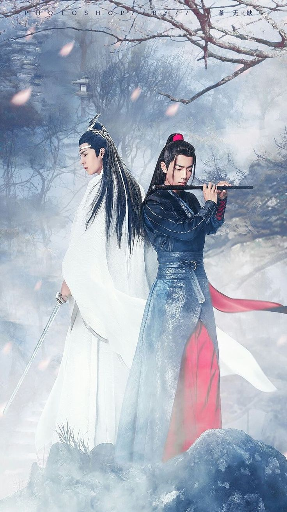

The story follows Light Yagami, a genius high school student who discovers a mysterious notebook: the "Death Note", which belonged to the shinigami Ryuk, and grants the user the supernatural ability to kill anyone whose name is written in its pages. The series centers around Light's subsequent attempts to use the Death Note to carry out a worldwide massacre of individuals whom he deems immoral and to create a crime-free society, using the alias of a god-like vigilante named "Kira", and the subsequent efforts of an elite Japanese police task force, led by enigmatic detective L , to apprehend him.

Hunter × Hunter (pronounced "hunter hunter"[4]) is a Japanese manga series written and illustrated by Yoshihiro Togashi. It has been serialized in Shueisha's shōnen manga magazine Weekly Shōnen Jump since March 1998, although the manga has frequently gone on extended hiatuses since 2006. Its chapters have been collected in 37 tankōbon volumes as of November 2022. The story focuses on a young boy named Gon Freecss who discovers that his father, who left him at a young age, is actually a world-renowned Hunter, a licensed professional who specializes in fantastical pursuits such as locating rare or unidentified animal species, treasure hunting, surveying unexplored enclaves, or hunting down lawless individuals. Gon departs on a journey to become a Hunter and eventually find his father. Along the way, Gon meets various other Hunters and encounters the paranormal.
 (Size 24 x 36).jpeg)
Iron Man is a 2008 American superhero film based on the Marvel Comics character of the same name. Produced by Marvel Studios and distributed by Paramount Pictures,[a] it is the first film in the Marvel Cinematic Universe (MCU). Directed by Jon Favreau from a screenplay by the writing teams of Mark Fergus and Hawk Ostby, and Art Marcum and Matt Holloway, the film stars Robert Downey Jr. as Tony Stark / Iron Man alongside Terrence Howard, Jeff Bridges, Gwyneth Paltrow, Leslie Bibb, and Shaun Toub. In the film, following his escape from captivity by a terrorist group, world-famous industrialist and master engineer Stark builds a mechanized suit of armor and becomes the superhero Iron Man.

Captain America: Civil War is a 2016 American superhero film based on the Marvel Comics character Captain America, produced by Marvel Studios and distributed by Walt Disney Studios Motion Pictures. It is the sequel to Captain America: The First Avenger (2011) and Captain America: The Winter Soldier (2014), and the 13th film in the Marvel Cinematic Universe (MCU). In Captain America: Civil War, disagreement over international oversight of the Avengers fractures the team into two opposing factions—one led by Steve Rogers and the other by Tony Stark (Downey)

Genre: Survival Science Fiction Action Thriller Dystopian Horror Black Comedy Plot: Hundreds of cash-strapped players, including a struggling gambler (Lee Jung-jae), a North Korean defector (HoYeon Jung), and a troubled debt collector (Park Hae-soo), accept a mysterious invitation to compete in childhood games with deadly high stakes. The games, inspired by popular Korean children’s games from the 1970s and 1980s, are designed to eliminate players, with the last one standing winning a ₩45.6 billion prize (approximately $38.5 million USD).

The Untamed is a Chinese fantasy drama series set in ancient China, based on the novel “Grandmaster of Demonic Cultivation” by Mo Xiang Tong Xiu. The story follows the complex and tumultuous relationship between two cultivators, Wei Wuxian and Lan Wangji, from different backgrounds and with contrasting personalities. Wei Wuxian, a charming and rebellious young man, is known for his exceptional martial arts skills and his disregard for the rules. Lan Wangji, on the other hand, is a serene and disciplined cultivator, embodying the ideals of wuxia manhood. The two initially clash as classmates, but their paths converge 16 years later as they navigate a world of ancient politics, mysterious events, and supernatural forces. As they unravel the tragedy of their past and confront the secrets of their present, they must also contend with their own feelings for each other. Throughout the series, The Untamed explores themes of love, loyalty, and redemption, set against a backdrop of stunning costumes, lavish production design, and intense sword fights. The drama’s beautiful love story, led by the troubled and passionate Wei Wuxian and the compassionate and devoted Lan Wangji, has captivated audiences worldwide.
